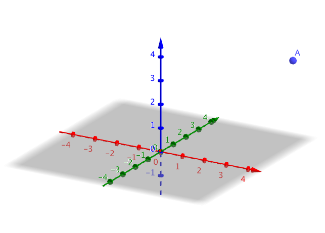
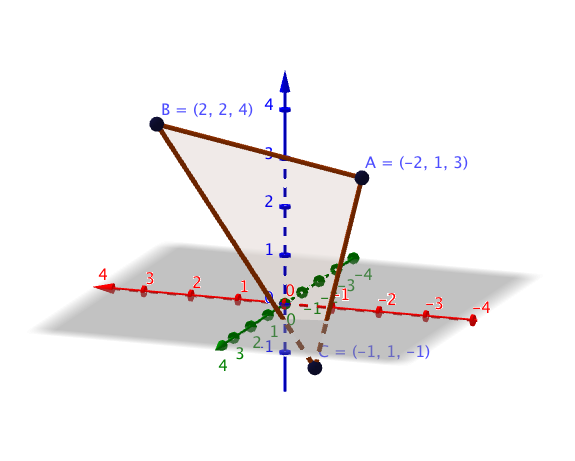
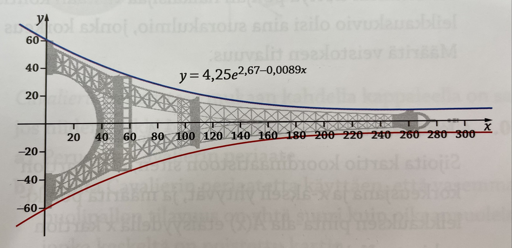
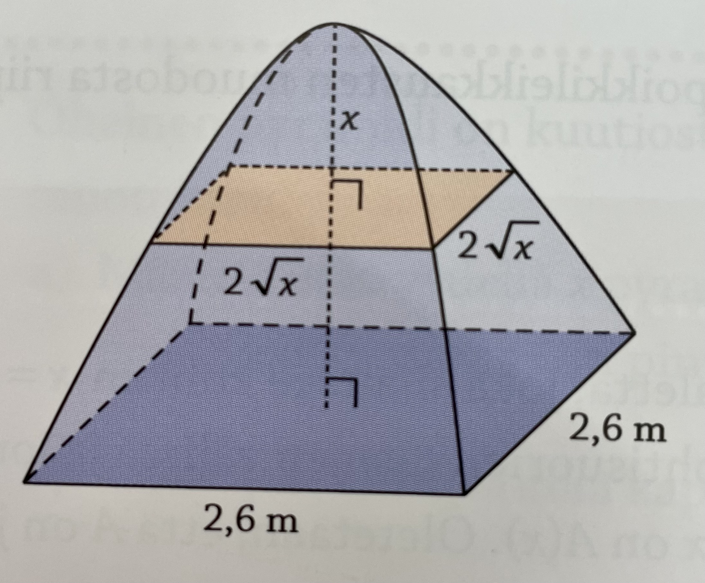

11. Repetition
Sedan är det bara att repetera.
Uppgifter
- Bestäm en riktningsvektor för följande linjer.
- \( y = 4x-2 \)
Då riktningskoefficenten är 4 rör vi oss 1 steg åt höger och 4 steg uppåt.
En riktningsvektor är \( \overline{s} = \overline{i} + 4\overline{j} \).
En annan är \( \overline{s} = -\overline{i} -4\overline{j} \).
Dessutom har vi multiplar av dessa tex, \( \overline{s} = 3\overline{i} + 12\overline{j} \).
- \( y = -2x - 1 \)
Då riktningskoefficenten är -2 rör vi oss 1 steg åt höger och 2 steg nedåt.
En riktningsvektor är \( \overline{s} = \overline{i} - 2\overline{j} \).
En annan är \( \overline{s} = -\overline{i} +2\overline{j} \).
Dessutom har vi multiplar av dessa tex, \( \overline{s} = -2\overline{i} +4\overline{j} \).
- \( y = -\dfrac{1}{4} x -1 \)
Då riktningskoefficenten är \( -\dfrac{1}{4} \) rör vi oss 4 steg åt höger och 1 steg nedåt.
En riktningsvektor är \( \overline{s} = 4\overline{i} -\overline{j} \).
En annan är \( \overline{s} = -4\overline{i} +\overline{j} \).
Dessutom har vi multiplar av dessa tex, \( \overline{s} = 8\overline{i} - 2\overline{j} \).
- \( y = 4x-2 \)
- Bestäm ekvationen för linjen som
- går genom punkten \( (-3,-4) \) och har riktningsvektorn \( \overline{s} = \overline{i} + 2\overline{j} \).
Linjens ekvation är av typ \( y-y_0 = k (x-x_0) \).
Riktningskoefficienten \( k = \dfrac{2}{1} = 2 \) och punkten är \( (-3,-4) \).
Linjens ekvation är \( y-(-4) = 2(x-(-3)) \) som är \( y = 2x+2 \).
- går genom punkten \( (-2,3) \) och har riktningsvektorn \( \overline{s} = 3\overline{i} - 2\overline{j} \).
Linjens ekvation är av typ \( y-y_0 = k (x-x_0) \).
Riktningskoefficienten \( k = \dfrac{-2}{3} \) och punkten är \( (-2,3) \).
Linjens ekvation är \( y-3 = -\dfrac{2}{3}(x-(-2)) \) som är \( y = -\dfrac{2}{3}x+\dfrac{5}{3} \).
- går genom punkten \( (2,4) \) och har riktningsvektorn \( \overline{s} = -\overline{i} - \overline{j} \).
Linjens ekvation är av typ \( y-y_0 = k (x-x_0) \).
Riktningskoefficienten \( k = \dfrac{-1}{-1} = 1 \) och punkten är \( (2,4) \).
Linjens ekvation är \( y-4 = 1(x-2) \) som är \( y = x+2 \).
- går genom punkten \( (-3,-4) \) och har riktningsvektorn \( \overline{s} = \overline{i} + 2\overline{j} \).
- Är punkten \( (0,0,-1) \) på linjen som går genom punkterna \( (2,-2,3) \) och \( (6,-6,11) \)?
Om punkterna är på samma linje, kan vi uttrycka \( \overrightarrow{AB} = r\overrightarrow{AC} \) där \( r \in \mathbf{R} \).
Vi namnger punkterna, \( A = (2,-2,3) \), \( B = (6,-6,11) \) och \( C = (0,0,-1) \).
Vi bildar vektorerna
\( \overrightarrow{AB} = 4\overline{i} -4\overline{j} + 8\overline{k} \).
\( \overrightarrow{AC} = -2\overline{i} +2\overline{j} -4\overline{k} \).
Vi får
\( \begin{array}{rcl} \overrightarrow{AB} & = & r\overrightarrow{AC} \\ 4\overline{i} -4\overline{j} + 8\overline{k} & = & r(-2\overline{i} +2\overline{j} -4\overline{k}) \\ 4\overline{i} -4\overline{j} + 8\overline{k} & = & -2r\overline{i} + 2r\overline{j} -4r\overline{k} \\ \end{array} \)
Uppdelningen är entydig.
\( \left\{ \begin{array}{l} 4 = -2r \\ -4 = 2r \\ 8 = -4r \\ \end{array} \right. \)
Eftersom \( r = -2 \) i alla ekvationer är punkterna på samma linje.
- Låt \(\overline{a}=-2\overline{i}+4\overline{j}-3\overline{k}\) och \(\overline{b}=2\overline{i}+3\overline{j}-5\overline{k}\). Bilda vektorerna \(\overline{a}-\overline{b}\) och \(-2\overline{a}+3\overline{b}\) och bestäm längden av dem.
\(\overline{a}-\overline{b}=-4\overline{i}+\overline{j}+2\overline{k}\).
Längden: \(\mid\overline{a}+\overline{b}\mid= \sqrt{(-4)^2+1^2+2^2} = \sqrt{21} \).
\(-2\overline{a}+3\overline{b}=10\overline{i}+\overline{j}-9\overline{k}\).
Längden: \(\mid-2\overline{a}+3\overline{b}\mid=\sqrt{10^2+1^2+(-9)^2}=\sqrt{182} \).
- Visa att \(\overline{a}=2\overline{i}-3\overline{j}+5\overline{k}\) och \(\overline{b}=-6\overline{i}+9\overline{j}-15\overline{k}\) är parallella.
Om två vektorer är parallella skall vi kunna skriva de som \(\overline{a} =r\cdot \overline{b}\) där \(r \in \mathbf{R}\).
Om två vektorer är parallella skall vi kunna skriva de som \(\overline{a} =r\cdot \overline{b}\) där \(r \in \mathbf{R}\).
Vi tar och gör det.
\(\begin{array}{rcl} \overline{a} & = & r\cdot \overline{b} \\ 2\overline{i}-3\overline{j}+5\overline{k} & = & r(-6\overline{i}+9\overline{j}-15\overline{k}) \\ \end{array}\)
Väljer vi \(r=-\dfrac{1}{3} \) får vi att \( 2\overline{i}-3\overline{j}+5\overline{k} = -\dfrac{1}{3}(-6\overline{i}+9\overline{j}-15\overline{k}) \).
Eller så jobbar du med entydigheten och bildar ett ekvationssystem.
De är parallella eftersom \(\overline{a}=-\dfrac{1}{3}\overline{b}\).
- Är punkten \( (0,8,-2)\) på linjen som går genom punkterna \( (-1,4,2) \) och \( (-3,0,6) \)?
Om punkterna är på samma linje, kan vi uttrycka \( \overrightarrow{AB} = r\overrightarrow{AC} \) där \( r \in \mathbf{R} \).
Vi namnger punkterna, \( A = (-1,4,2) \), \( B = (-3,0,6) \) och \( C = (0,8,-2) \).
Vi bildar vektorerna
\( \overrightarrow{AB} = -2\overline{i} -4\overline{j} +4\overline{k} \).
\( \overrightarrow{AC} = \overline{i} + 4\overline{j} -4\overline{k} \).
Vi får
\( \begin{array}{rcl} \overrightarrow{AB} & = & r\overrightarrow{AC} \\ -2\overline{i} -4\overline{j} +4\overline{k} & = & r(\overline{i} + 4\overline{j} -4\overline{k}) \\ -2\overline{i} -4\overline{j} +4\overline{k} & = & r\overline{i} + 4r\overline{j} -4r\overline{k} \\ \end{array} \)
Uppdelningen är entydig.
\( \left\{ \begin{array}{lr} -2 = r & \Leftrightarrow r = -2 \\ -4 = 4r & \Leftrightarrow r = -1 \\ 4 = -4r & \Leftrightarrow r = -1 \\ \end{array} \right. \)
Eftersom \( r \) inte har samma värde ligger punkterna inte på samma linje.
- Bestäm en vektor som är vinkelrät till följande vektorer.
- \( \overline{a} = 5\overline{i} +3\overline{j} -\overline{k} \) och \( \overline{b} = 3\overline{j} -2\overline{k} \)
Kryssprodukten har värdet \( \overline{a} \times \overline{b} = -3\overline{i} +10\overline{j} +15\overline{k} \). Dessutom har vi multiplar av kryssprodukten.
- \( \overline{c} = -\overline{i}+\overline{j} -\overline{k} \) och \( \overline{d} = \overline{i} -2 \overline{j} +\overline{k} \)
Kryssprodukten har värdet \( \overline{c} \times \overline{d} = -\overline{i} +\overline{k} \). Dessutom har vi multiplar av kryssprodukten.
- \( \overline{u} = 2\overline{i}-3\overline{k} \) och \( \overline{v} = -3\overline{i} +\overline{j} \)
Kryssprodukten har värdet \( \overline{u} \times \overline{v} = 3\overline{i}+9\overline{i}+2\overline{i} \). Dessutom har vi multiplar av kryssprodukten.
- \( \overline{a} = 5\overline{i} +3\overline{j} -\overline{k} \) och \( \overline{b} = 3\overline{j} -2\overline{k} \)
- Bestäm arean av parallellogrammen som bildas av vektorerna \( \overline{a} = -3\overline{i} -\overline{j} \) och \( \overline{b} = \overline{i} +2\overline{j} \).
Kryssprodukten \( \overline{a} \times \overline{b} = 7\overline{k} \). Arean för parallellogrammen är 7 a.e.
- Bestäm arean av parallellogrammen som bildas av vektorerna \( \overline{a} = 2\overline{i} +\overline{j} +\overline{k} \) och \( \overline{b} = \overline{i} +2\overline{j} +4\overline{k} \).
Kryssprodukten \( \overline{a} \times \overline{b} = 2\overline{i} -7\overline{j} +3\overline{k} \).
Arean för parallellogrammen är \( \mid \overline{a} \times \overline{b} \mid = \sqrt{(2)^2+(-7)^2+3^2} = \sqrt{62} \) a.e.
- Låt \( f(x,y) = x^2 + y^2 -1 \).
- Bestäm definitionsmängden
Definitionsmängden är alla reella tal.
- Bestäm nollställena
Nollstället motsvaras av ekvationen för cirkeln \( x^2 + y^2 = 1 \).
- Bestäm kritiska punkterna
Partialderivatorna är \( \partial_x f = 2x \) och \( \partial_y f = 2y \).
Lös ekvationssystemet
\( \left\{ \begin{array}{l} 2x = 0 \\ 2y = 0 \\ \end{array} \right. \)
och kom fram till punkten \( (0,0) \).
- Bestäm definitionsmängden
- Låt \( f(x,y) = \sqrt{-x^2+y+4} \).
- Bestäm definitionsmängden
Funktionen är definierad då radikanden, det under roten, är positiv. Alltså då \( y > x^2 - 4 \).
- Bestäm nollställena
Nollställena för funktionen är \( y = x^2 - 4 \)
- Bestäm kritiska punkterna
Partialderivatorna är \( \partial_x f = \dfrac{-x}{\sqrt{-x^2+y+4}} \) och \( \partial_y f = \dfrac{-\frac{1}{2}}{\sqrt{-x^2+y+4}} \).
Lös ekvationssystemet
\( \left\{ \begin{array}{l} \dfrac{-x}{\sqrt{-x^2+y+4}} = 0 \\ \dfrac{-\frac{1}{2}}{\sqrt{-x^2+y+4}} = 0 \\ \end{array} \right. \)
och kom fram till lösningarna att ekvationssystemet saknar lösningar.
Ritar du upp grafen av funktionen märker och inser du att den växer fint av sig och byter aldrig riktning.
- Bestäm definitionsmängden
- Låt \( f(x,y) = x^2-y^3-xy \).
- Bestäm definitionsmängden
Definitionsmängden är alla reella tal.
- Bestäm nollställena
Nollställena kan vi uttrycka med hjälp av \( x = \ldots \). För att göra det utnyttjar vi rotformeln.
Kom fram till \( x = \dfrac{y\pm \sqrt{y^2+4y^3}}{2} \).
- Bestäm kritiska punkterna
Partialderivatorna är \( \partial_x f = 2x-y \) och \( \partial_y f = -3y^2-x \).
Lös ekvationssystemet
\( \left\{ \begin{array}{l} 2x-y = 0 \\ -3y^2-x = 0 \\ \end{array} \right. \)
och kom fram till lösningarna \( (0,0) \) och \( (-\dfrac{1}{12},-\dfrac{1}{6}) \).
- Bestäm definitionsmängden
- Låt \( f(x,y) = x^2 - \sin(y) \).
- Bestäm definitionsmängden
Eftersom vi har \( x^2 \) och \( \sin(y) \) vars definitionsmängd är alla reella tal så är \( f \):s definitionsmängd alla reella tal.
- Bestäm nollställena
Vi får \( y = \pm \arcsin(x^2) + 2n\pi \) eller som \( y = \pm \sin^{-1}(x^2) + 2n\pi \)
- Bestäm kritiska punkterna
Partialderivatorna är \( \partial_x f = 2x \) och \( \partial_y f = -\cos(y) \).
Lös ekvationssystemet
\( \left\{ \begin{array}{l} 2x = 0 \\ -\cos(y) = 0 \\ \end{array} \right. \)
och kom fram till lösningarna \( (0,\dfrac{\pi}{2} + n\pi) \) där \( n \in \mathbf{Z} \).
- Bestäm definitionsmängden
Bestäm avståndet för punkten \(P = (2,7,2)\) från
- \( x \)-axeln.
Situationen är följande

Avståndet får vi via Pythagoras \( d = \sqrt{7^2 + 2^2} = \sqrt{53} \approx 7,3 \) l.e.
- \( y \)-axeln
På motsvarande sätt som i a).
Avståndet är \( \sqrt{2^2+2^2} = 2\sqrt{2} \approx 2,8 \) l.e.
- \(xy\)-planet
Avståndet är samma som \( z \)-koordinaten. Alltså 2 l.e.
- \(xz\)-planet.
Avståndet är samma som \( y \)-koordinaten. Alltså 7 l.e.
- \( x \)-axeln.
- Bestäm volymen som bildas i intervallet \( [2,4] \) då \( f(x)=\dfrac{1}{x^2}-1 \) roterar kring \( x \)-axeln.
Vi har \( \pi\displaystyle\int_2^4 (\dfrac{1}{x^2}-1)^2 \mathrm{ d} x = \dfrac{295\pi}{192} \approx 4,83 \) v.e.
- Bestäm volymen som bildas i intervallet \( [0,\pi] \) då \( f(x)=\sin^2(x) \) roterar kring \( x \)-axeln.
Vi har \( \pi \displaystyle\int_0^{\pi} (\sin^2(x))^2 \mathrm{ d} x = \dfrac{3}{8}\pi^2 \approx 3,70 \).
- För vilka värden på \(r\) och \(s\) är vektorerna \(\overline{a}=\overline{i}-2\overline{j}+6\overline{k}\) och \(\overline{b}=r\overline{i}+\overline{j}+s\overline{k}\) parallella. Är de då lika- eller olika riktade?
Då \(\overline{a}\) och \(\overline{b}\) är parallella gäller att \(\overline{a} = t\cdot \overline{b}, t\in \mathbf{R}\). (Vi använder oss av \(t\) eftersom \(r\) finns i vektorerna.)
Alltså
\(\begin{array}{rcl} \overline{a} & = & t\cdot \overline{b} \\ \overline{i} -2\overline{j}+6\overline{k} & = &t(r\overline{i}+\overline{j}+s\overline{k}) \\ \overline{i} -2\overline{j}+6\overline{k} & = &tr\overline{i}+t\overline{j}+st\overline{k} \\ \end{array}\)
Uppdelning i basen är entydig. Alltså gäller att
\(\left\{ \begin{array}{rcll} 1 & = & rt \\ -2 & = & t \\ 6 & = & st \\ \end{array} \right.\)
Alltså då \(t= -2\) är \(\overline{a}\) och \(\overline{b}\) parallella. Eftersom \(t < 0 \) är de olika riktade.
Vå får då att \(r=-\dfrac{1}{2}\) och \( s=-3 \).
- Bestäm som parameterframställning ekvationen för linjen som representeras av punkten \(( 3,1,-4 )\) och riktningsvektorn \(2\overline{i}-7\overline{j}+2\overline{k}\).
Vi har en punkt \( P =(3,1,-4) \) och en riktingsvektor \( \overline{s} = 2\overline{i}-7\overline{j}+2\overline{k}\).
Vi utnyttjar formeln
\( \left\{ \begin{array}{l} x = x_0 + ts_x \\ y = y_0 + ts_t \\ z = z_0 + ts_z \\ \end{array} \right. \)
Vi får
\(\left\{ \begin{array}{rcl} x & = & 3 + 2t \\ y & = & 1 -7t \\ z & = & -4 +2t \quad t \in \mathbb{R}\\ \end{array} \right.\)
- En triangel bildas av punkterna \( A=(-2,1,3) \), \( B=(2,2,4) \) och \( C =(-1,1,-1) \). Bestäm storleken av vinklarna för triangeln med en tiondels decimals noggrannhet.
Situationen är följande:

Vi bildar vektorerna.
\( \overline{a} = \overrightarrow{AB} = 4\overline{i} + \overline{j} +1\overline{k} \)
\( \overline{b} = \overrightarrow{AC} = \overline{i} -4\overline{k} \)
\( \overline{c} = \overrightarrow{BC} = -3\overline{i} -\overline{j} -5\overline{k} \)
Längderna av vektorerna är
\( \mid \overline{a} \mid = 3\sqrt{2} \)
\( \mid \overline{b} \mid = \sqrt{17} \)
\( \mid \overline{c} \mid = \sqrt{35} \)
De skalära produkterna är
\( \overline{a} \cdot \overline{b} = 0 \)
\( \overline{a} \cdot \overline{c} = -18 \)
Vi märker att vi borde ha en trubbig vinkel. Det beror på hur vi har definierat vektorerna. Märk att vi måste observera detta då vi bestämmer vinklarna.
\( \overline{b} \cdot \overline{c} = 17 \)
Vi får vinklarna
\( \angle(\overline{a},\overline{b}) = 90^{\circ} \)
\( \angle(\overline{a},\overline{c}) = 135,8^{\circ} \)
Vi märker att denna vinkel är för stor då vi jämför med bilden. Det beror på hur vi har definierat vektorerna. Eller så tar vi \( \angle(-\overline{a},\overline{c}) = 44,2^{\circ} \)
\( \angle(\overline{b},\overline{c}) = 45,8^{\circ} \)
Eftersom vi får den mindre vinkeln med hjälp av skalära produkten är vinkeln \( \angle(\overline{a},\overline{c}) = 180^{\circ} - 135,8^{\circ} = 44,2^{\circ} \).
- Bestäm storleken av triangeln med hjälp av vektorer.
Med hjälp av kryssprodukten får vi \( A = \dfrac{1}{2} \mid \overline{a} \times \overline{b} \mid = \dfrac{3}{2}\sqrt{34} \approx 8,75 \).
Märk att det är ingen skillnad vilka två vektorer som du utnyttjar.
- Bestäm storleken av triangeln med hjälp av vektorer.
- För vilka värden på \( k \) gäller att triangeln som bestäms av punkterna \((-3,2)\), \((1,k)\) och \((-1,-4)\) är rätvinklig.
Vi bildar vektorerna mellan punkterna \(A=(-3,2)\), \(B=(1,k)\) och \(C=(-1,-4)\).
\( \overrightarrow{AB} = 4\overline{i} + (k-2)\overline{j} \).
\( \overrightarrow{BC} = -2\overline{i} (-4-k)\overline{j} \).
Eftersom \( k \) endast finns i en punkt klarar vi oss med dessa vektorer. Vi bildar den skalära produkten och tvingar att ha värdet 0.
\( \begin{array}{rcl} \overrightarrow{AB} \cdot \overrightarrow{BC} & = & 0 \\ 4(-2)+(k-2)\cdot(-4-k) & = & 0 \\ \end{array} \)
Ekvationen har lösningarna \( k_1 = -2 \) och \( k_2 = 0 \).
- Bestäm storleken av bägge trianglar med hjälp av vektorer.
Med hjälp av kryssprodukten får vi \( A = \dfrac{1}{2} \mid \overline{a} \times \overline{b} \mid \).
Då \( k_1 = -2 \) är arean 8 .
Då \( k_1 = 0 \) är arean 10 .
- Bestäm storleken av bägge trianglar med hjälp av vektorer.
- Gustave Eiffel planerade det berömda tornet till världsutställningen i Paris 1900. Då tornet blev färdigt var det med sin höjd på 300 m världes högsta byggnad. Tvärsnittsareorna för tornet bildar kvadrater. När man placerar in tornet i ett koordinatsytem följder de kurvan \( f(x) = 4,25e^{2,67-0,0089x} \). Om vi skulle täcka tornet (med skivor, tyg eller dyligt), hur stor blir volymen?

På avståndet \( x \) är höjden för tvärsnittsarean \( 2y = 2\cdot 4,25e^{2,67-0,0089x} \).
Alltså är tvärsnittsarean \( A(x) = (2\cdot 4,25e^{2,67-0,0089x})^2 \).
Integrera från 0 till 300 och kom fram till 840 000 m3.
- Bestäm volymen för tältet i figuren. På avståndet \( x \) från toppen av tältet bildar tvärsnittsareorna kvadrater med sidan \( 2\sqrt{x} \).

Vi behöver tvärsnittarean \( A(x) \) och integreringsgränserna.
På avståndet \( x \) från höjden är tvärsnittsarean \( A(x)= (2\sqrt{x})^2 = 4x \).
Höjden för tältet vår vi via bottenarean för tältet.
\( 2\sqrt{x} = 2,6 \) ger oss \( x = 1,69 \). Alltså är tältet 1,69 m högt.
Vi får \( V = \displaystyle\int_0^{1,69} A(x) \text{ d}x = \displaystyle\int_0^{1,69} 4x \text{ d}x \approx 5,7 \) m3.
- I vilken punkt skär linjen som går genom \( (5,3,8) \) och \( (-3,2,3) \) \(xy\)-planet?
Bilda en ekvation för linjen. För vilket värde på \(z\) skär linjen \(xy\)-planet?
Vi behöver en punkt och en riktningsvektor. Beroende på hur vi väljer dem får vi lite olika uträkningar. Däremot är slutsvaret, punkten som vi söker samma.
En riktningsvektor är \( \overline{s} = -8\overline{i} -\overline{j}-5\overline{k} \). En punkt på linjen är \( P =(5,3,8) \).
Linjens ekvation kan se ut som
\(\left\{ \begin{array}{rcl} x & = & 5 -8t \\ y & = & 3 -t \\ z & = & 8 -5t \quad t \in \mathbb{R} \\ \end{array} \right.\)
Då linjen skär \( xy \)-planet är skärningspunkten av typ \( Q = (x,y,0) \). Vi utnyttjar att \( z = 0 \) för att lösa ut \( t \).
Vi får \( t = \dfrac{8}{5} \).
Vi får de andra koordinaterna genom att sätta in \( t =\dfrac{8}{5} \) i linjens ekvation.
Vi får \( x = -\dfrac{39}{5} \) och \( y = \dfrac{7}{5} \). Skärningspunkten är \( (-\dfrac{39}{5},\dfrac{7}{5},0) \).
- I vilken punkt skär linjen som går genom origo och \( (1,-1,2) \) planet som spänns upp av \( (-1,3,2) \), \( (2,-5,2) \) och \( (3,2,-1) \).
Vi börjar med att bilda planets ekvation.
\( A=(-1,3,2)\), \( B=(2,-5,2)\) och \( C=(3,2,-1)\).
\( \overrightarrow{AB} = 3\overline{i} -8\overline{j} \).
\( \overrightarrow{AC} = 4\overline{j}-\overline{j} -3\overline{k} \).
\( \overrightarrow{OA} = -\overline{i} + 3\overline{j} +2\overline{k} \).
Punkten \( P \) har koordinaterna P \( (x,y,z) \).
Vi bildar \( \overrightarrow{OP} = \overrightarrow{OA} + r\overrightarrow{AB} + s\overrightarrow{AC} \).
Vi kommer fram till planets ekvation
\( \left\{ \begin{array}{rcl} x & = & -1 +3r -s \\ y & = & 3 -8r +3s \\ z & = & 2 +4s \\ \end{array} \right. \)
Eftersom linjen går genom origo och genom punkten är dess riktningsvektor \( s = \overline{i} + \overline{j} + \overline{k} \).
Linjens ekvation är
\( \left\{ \begin{array}{rcl} x & = & t \\ y & = & -t \\ z & = & 2t \\ \end{array} \right. \)
Vi söker den gemensamma punkten för planet och linjen.
\( \left\{ \begin{array}{rcl} t & = & -1 +3r -s \\ -t & = & 3 -8r +3s \\ 2t & = & 2 +4s \\ \end{array} \right. \)
Vi får \( r = \dfrac{2}{9} \), \( s = -\dfrac{4}{9} \) och \( t = \dfrac{1}{9} \).
Vi sätter in \( t = \dfrac{1}{9} \) i linjens ekvation. Vi får skärningspunkten \( (\dfrac{1}{9},-\dfrac{1}{9},-\dfrac{2}{9}) \).